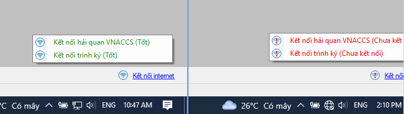
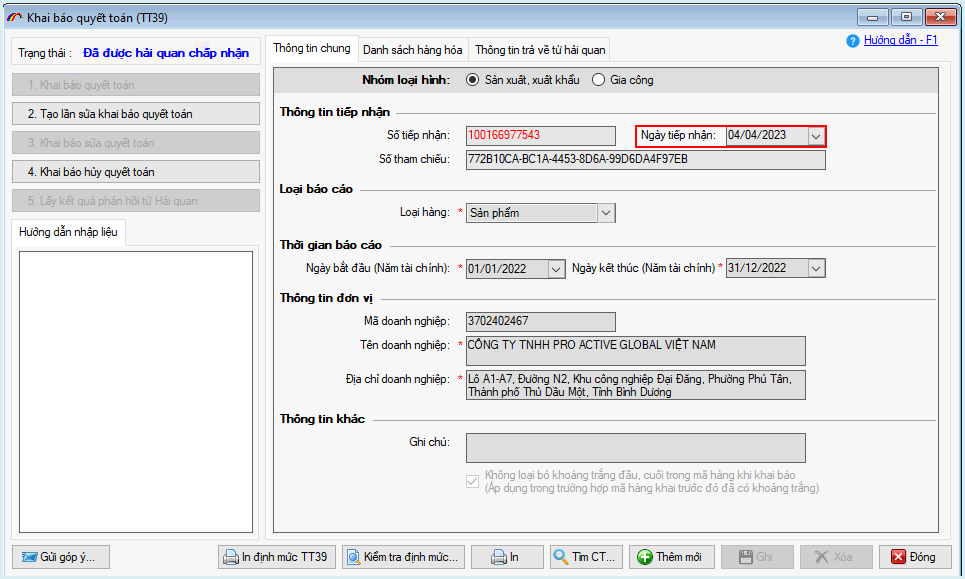
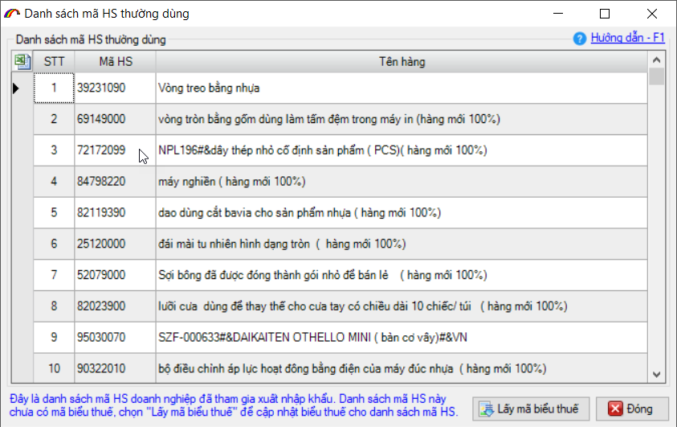
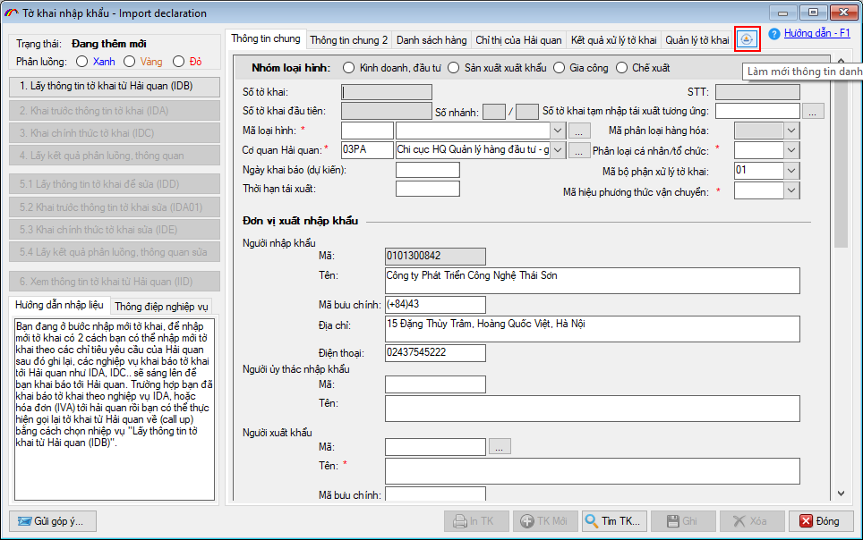
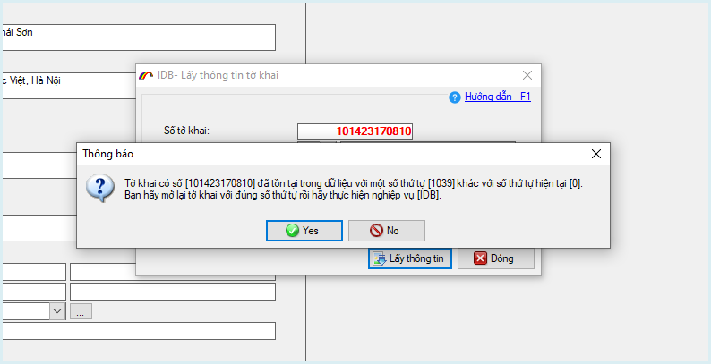

NHỮNG THAY ĐỔI TRÊN BẢN ECUS5VNACCS 2018
(Phiên bản update 26/03/2023)
Phần mềm ECUS5VNACCS2018 - Ngày phát hành 12/04/2023
Phiên bản cập nhật ngày 26/03/20232 được phát hành ngày 12/04/2023 bổ sung, sửa đổi các chức năng sau:
- 1. Bổ sung chức năng kiểm tra kêt nối mạng.
Phần mềm bổ sung chức năng kiểm tra kết nối trình ký và kết nối hệ thống VNACCS. Khi người dùng nhấn vào link Kết nối internet ở góc phải bên dưới.
Trạng thái kết nối ổn định hoặc chưa kết nối được thể hiện như hình dưới đây:

- 2. Giữ nguyên ngày tiếp nhận sau khi BCQT được duyệt
Hiện nay, sau khi BCQT lấy được kết quả chấp nhận duyệt từ cơ quan Hải quan trả về, ngày tiếp nhận bị thay đổi thành ngày duyệt. Bản nâng cấp mới đã sửa để giữ nguyên ngày tiếp nhận (ngày khai báo) khi lấy được kết quả chấp nhận.

- 3. Bỏ chức năng cảnh báo HS thường dùng:
Bắt đầu từ bản 20/03/2023, phần mềm chính thức bỏ chức năng cảnh báo HS mỗi khi người dùng đăng nhập phần mềm lần đầu trong ngày làm việc.

- 4. Bổ sung chức năng refresh danh mục mới.
Thông thường, mỗi khi thêm danh mục mới / cập nhật danh mục mới, để có thể chọn được vào tờ khai, chứng từ doanh nghiệp phải tắt phần mềm rồi mở lại. Ở bản nâng cấp này, sau khi cập nhật hoặc thêm mới, doanh nghiệp chỉ cần nhấn vào nút Làm mới thông tin danh mục là đã có thể chọn được.
Chức năng này hiện có trên tờ khai nhập khẩu (IDA) và tờ khai xuất khẩu (EDA)

- 5. Không cho phép gọi thông tin tờ khai (IDB/EDB) trên nhiều bản.
Khi một tờ khai đã tồn tại trong CSDL của doanh nghiệp, phần mềm sẽ không cho phép người dùng sử dụng chức năng IDB/EDB để gọi về thêm trên tờ khai mới. Thông báo được phần mềm cảnh báo như sau:

- 6. Ngoài ra, còn có nhiều mục sửa đổi bổ sung khác nhằm nâng cao hiệu suất và tạo sự thuận lợi cho người dùng...
...
Bản quyền © thuộc về Công ty TNHH Phát triển công nghệ Thái Sơn